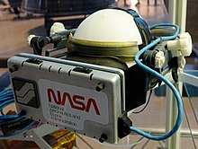

The exact origins of virtual reality are disputed, partly because of how difficult it has been to formulate a definition for the concept of an alternative existence. The development of perspective in Renaissance Europe created convincing depictions of spaces that did not exist, in what has been referred to as the "multiplying of artificial worlds". Other elements of virtual reality appeared as early as the 1860s. Antonin Artaud took the view that illusion was not distinct from reality, advocating that spectators at a play should suspend disbelief and regard the drama on stage as reality. The first references to the more modern concept of virtual reality came from science fiction.
20th Century
Morton Heilig wrote in the 1950s of an "Experience Theatre" that could encompass all the senses in an effective manner, thus drawing the viewer into the onscreen activity. He built a prototype of his vision dubbed the Sensorama in 1962, along with five short films to be displayed in it while engaging multiple senses (sight, sound, smell, and touch). Predating digital computing, the Sensorama was a mechanical device. Heilig also developed what he referred to as the "Telesphere Mask" (patented in 1960). The patent application described the device as "a telescopic television apparatus for individual use...The spectator is given a complete sensation of reality, i.e. moving three dimensional images which may be in colour, with 100% peripheral vision, binaural sound, scents and air breezes."
In 1968, Ivan Sutherland, with the help of his students including Bob Sproull, created what was widely considered to be the first head-mounted display system for use in immersive simulation applications. It was primitive both in terms of user interface and visual realism, and the HMD to be worn by the user was so heavy that it had to be suspended from the ceiling. The graphics comprising the virtual environment were simple wire-frame model rooms. The formidable appearance of the device inspired its name, The Sword of Damocles.
The 70's - 90's
The virtual reality industry mainly provided VR devices for medical, flight simulation, automobile industry design, and military training purposes from 1970 to 1990.
David Em became the first artist to produce navigable virtual worlds at NASA's Jet Propulsion Laboratory (JPL) from 1977 to 1984. The Aspen Movie Map, a crude virtual tour in which users could wander the streets of Aspen in one of the three modes (summer, winter, and polygons), was created at MIT in 1978.
In 1979, Eric Howlett developed the Large Expanse, Extra Perspective (LEEP) optical system. The combined system created a stereoscopic image with a field of view wide enough to create a convincing sense of space. The users of the system have been impressed by the sensation of depth (field of view) in the scene and the corresponding realism. The original LEEP system was redesigned for NASA's Ames Research Center in 1985 for their first virtual reality installation, the VIEW (Virtual Interactive Environment Workstation) by Scott Fisher. The LEEP system provides the basis for most of the modern virtual reality headsets.
By the 1980s, the term "virtual reality" was popularized by Jaron Lanier, one of the modern pioneers of the field. Lanier had founded the company VPL Research in 1985. VPL Research has developed several VR devices like the DataGlove, the EyePhone, and the AudioSphere. VPL licensed the DataGlove technology to Mattel, which used it to make the Power Glove, an early affordable VR device.
Atari, Inc. founded a research lab for virtual reality in 1982, but the lab was closed after two years due to the Atari Shock (video game crash of 1983). However, its hired employees, such as Tom Zimmerman, Scott Fisher, Jaron Lanier, Michael Naimark, and Brenda Laurel, kept their research and development on VR-related technologies.
In 1988, the Cyberspace Project at Autodesk was the first to implement VR on a low-cost personal computer. The project leader Eric Gullichsen left in 1990 to found Sense8 Corporation and develop the WorldToolKit virtual reality SDK, which offered the first real time graphics with Texture mapping on a PC, and was widely used throughout industry and academia.
The 90's - 2000's
The 1990s saw the first widespread commercial releases of consumer headsets. In 1992, for instance, Computer Gaming World predicted "affordable VR by 1994".
In 1991, Sega announced the Sega VR headset for arcade games and the Mega Drive console. It used LCD screens in the visor, stereo headphones, and inertial sensors that allowed the system to track and react to the movements of the user's head. In the same year, Virtuality launched and went on to become the first mass-produced, networked, multiplayer VR entertainment system that was released in many countries, including a dedicated VR arcade at Embarcadero Center. Costing up to $73,000 per multi-pod Virtuality system, they featured headsets and exoskeleton gloves that gave one of the first "immersive" VR experiences.
That same year, Carolina Cruz-Neira, Daniel J. Sandin and Thomas A. DeFanti from the Electronic Visualization Laboratory created the first cubic immersive room, the Cave automatic virtual environment (CAVE). Developed as Cruz-Neira's PhD thesis, it involved a multi-projected environment, similar to the holodeck, allowing people to see their own bodies in relation to others in the room. Antonio Medina, a MIT graduate and NASA scientist, designed a virtual reality system to "drive" Mars rovers from Earth in apparent real time despite the substantial delay of Mars-Earth-Mars signals.
In 1992, Nicole Stenger created Angels, the first real-time interactive immersive movie where the interaction was facilitated with a dataglove and high-resolution goggles. That same year, Louis Rosenberg created the virtual fixtures system at the U.S. Air Force's Armstrong Labs using a full upper-body exoskeleton, enabling a physically realistic mixed reality in 3D. The system enabled the overlay of physically real 3D virtual objects registered with a user's direct view of the real world, producing the first true augmented reality experience enabling sight, sound, and touch.
By 1994, Sega released the Sega VR-1 motion simulator arcade attraction, in SegaWorld amusement arcades. It was able to track head movement and featured 3D polygon graphics in stereoscopic 3D, powered by the Sega Model 1 arcade system board. Apple released QuickTime VR, which, despite using the term "VR", was unable to represent virtual reality, and instead displayed 360-degree interactive panoramas.
Nintendo's Virtual Boy console was released in 1995. A group in Seattle created public demonstrations of a "CAVE-like" 270 degree immersive projection room called the Virtual Environment Theater, produced by entrepreneurs Chet Dagit and Bob Jacobson. Forte released the VFX1, a PC-powered virtual reality headset that same year.
In 1999, entrepreneur Philip Rosedale formed Linden Lab with an initial focus on the development of VR hardware. In its earliest form, the company struggled to produce a commercial version of "The Rig", which was realized in prototype form as a clunky steel contraption with several computer monitors that users could wear on their shoulders. The concept was later adapted into the personal computer-based, 3D virtual world program Second Life.
View-Master, a stereoscopic visual simulator, was introduced in 1939
A VPL Research DataSuit, a full-body outfit with sensors for measuring the movement of arms, legs, and trunk. Developed circa 1989. Displayed at the Nissho Iwai showroom in Tokyo

NASA Ames's 1985 VIEW headset
A CAVE system at IDL's Center for Advanced Energy Studies in 2010
Virtual Fixtures immersive AR system developed in 1992. Picture features Dr. Louis Rosenberg interacting freely in 3D with overlaid virtual objects called 'fixtures'
In 2010, Palmer Luckey designed the first prototype of the Oculus Rift. This prototype, built on a shell of another virtual reality headset, was only capable of rotational tracking.
However, it boasted a 90-degree field of vision that was previously unseen in the consumer market at the time. Distortion issues arising from the lens used to create the field of vision were corrected for by software written by John Carmack for a version of Doom 3. This initial design would later serve as a basis from which the later designs came. In 2012, the Rift is presented for the first time at the E3 video game trade show by Carmack. In 2014, Facebook purchased Oculus VR for what at the time was stated as $2 billion but later revealed that the more accurate figure was $3 billion. This purchase occurred after the first development kits ordered through Oculus' 2012 Kickstarter had shipped in 2013 but before the shipping of their second development kits in 2014. ZeniMax, Carmack's former employer, sued Oculus and Facebook for taking company secrets to Facebook; the verdict was in favour of ZeniMax, settled out of court later.
In 2013, Valve discovered and freely shared the breakthrough of low-persistence displays which make lag-free and smear-free display of VR content possible. This was adopted by Oculus and was used in all their future headsets. In early 2014, Valve showed off their SteamSight prototype, the precursor to both consumer headsets released in 2016. It shared major features with the consumer headsets including separate 1K displays per eye, low persistence, positional tracking over a large area, and fresnel lenses. HTC and Valve announced the virtual reality headset HTC Vive and controllers in 2015. The set included tracking technology called Lighthouse, which utilized wall-mounted "base stations" for positional tracking using infrared light.
In 2014, Sony announced Project Morpheus (its code name for the PlayStation VR), a virtual reality headset for the PlayStation 4 video game console.
In 2015, Google announced Cardboard, a do-it-yourself stereoscopic viewer: the user places their smartphone in the cardboard holder, which they wear on their head.
Michael Naimark was appointed Google's first-ever 'resident artist' in their new VR division. The Kickstarter campaign for Gloveone, a pair of gloves providing motion tracking and haptic feedback, was successfully funded, with over $150,000 in contributions. Also in 2015, Razer unveiled its open source project OSVR.
By 2016, there were at least 230 companies developing VR-related products. Amazon, Apple, Facebook, Google, Microsoft, Sony and Samsung all had dedicated AR and VR groups. Dynamic binaural audio was common to most headsets released that year. However, haptic interfaces were not well developed, and most hardware packages incorporated button-operated handsets for touch-based interactivity. Visually, displays were still of a low-enough resolution and frame rate that images were still identifiable as virtual.
In 2016, HTC shipped its first units of the HTC Vive SteamVR headset. This marked the first major commercial release of sensor-based tracking, allowing for free movement of users within a defined space. A patent filed by Sony in 2017 showed they were developing a similar location tracking technology to the Vive for PlayStation VR, with the potential for the development of a wireless headset.
In 2019, Oculus released the Oculus Rift S and a standalone headset, the Oculus Quest. These headsets utilized inside-out tracking compared to external outside-in tracking seen in previous generations of headsets.
Later in 2019, Valve released the Valve Index. Notable features include a 130° field of view, off-ear headphones for immersion and comfort, open-handed controllers which allow for individual finger tracking, front facing cameras, and a front expansion slot meant for extensibility.
In 2020, Oculus released the Oculus Quest 2. Some new features include a sharper screen, reduced price, and increased performance. Facebook now requires user to log in with a Facebook account in order to use the new headset.
Future
With the COVID-19 restrictions in 2020, VR is experiencing an enormous rise. According to Grand View Research, the global VR market will grow to 62.1 billion dollars in 2027.
Paid for by nobody, website created by Ryan Hoshall. Enjoy!


.jpg) However, it boasted a 90-degree field of vision that was previously unseen in the consumer market at the time. Distortion issues arising from the lens used to create the field of vision were corrected for by software written by John Carmack for a version of Doom 3. This initial design would later serve as a basis from which the later designs came. In 2012, the Rift is presented for the first time at the E3 video game trade show by Carmack. In 2014, Facebook purchased Oculus VR for what at the time was stated as $2 billion but later revealed that the more accurate figure was $3 billion. This purchase occurred after the first development kits ordered through Oculus' 2012 Kickstarter had shipped in 2013 but before the shipping of their second development kits in 2014. ZeniMax, Carmack's former employer, sued Oculus and Facebook for taking company secrets to Facebook; the verdict was in favour of ZeniMax, settled out of court later.
However, it boasted a 90-degree field of vision that was previously unseen in the consumer market at the time. Distortion issues arising from the lens used to create the field of vision were corrected for by software written by John Carmack for a version of Doom 3. This initial design would later serve as a basis from which the later designs came. In 2012, the Rift is presented for the first time at the E3 video game trade show by Carmack. In 2014, Facebook purchased Oculus VR for what at the time was stated as $2 billion but later revealed that the more accurate figure was $3 billion. This purchase occurred after the first development kits ordered through Oculus' 2012 Kickstarter had shipped in 2013 but before the shipping of their second development kits in 2014. ZeniMax, Carmack's former employer, sued Oculus and Facebook for taking company secrets to Facebook; the verdict was in favour of ZeniMax, settled out of court later.